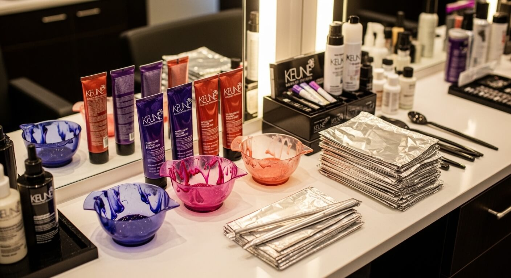

Balayage vs highlights: welke kleurbehandeling past bij jou?
Inhoudsopgave
Balayage of highlights: wat is het verschil?
Je wilt lichter haar, maar welke techniek past bij jou? Balayage en highlights worden vaak door elkaar gebruikt, maar het zijn twee compleet verschillende kleurtechnieken met een ander resultaat, onderhoud en prijsplaatje.
Bij Hairstudio Igor in Woerden zien we deze vraag dagelijks. De keuze hangt af van je haartype, je lifestyle en het resultaat dat je wilt bereiken.
Wat is balayage?
Balayage komt van het Franse woord voor 'vegen'. De colorist brengt de kleur met de hand aan — letterlijk vegend over de haarlokken. Er worden geen folies gebruikt. Het resultaat is een natuurlijke, zongebleekte look met zachte overgangen.
Kenmerken van balayage:
- Zachte, geleidelijke overgang van donker naar licht
- Geen harde lijnen bij de uitgroei
- Minder onderhoud nodig — de uitgroei is subtiel
- Werkt het best op halflang tot lang haar
- Geeft een natuurlijk, beachy effect
Wat zijn highlights?
Highlights (ook wel meches of plukjes) worden aangebracht met folies. De colorist selecteert dunne of dikke lokken en wraps ze in folie met kleurproduct. Het resultaat is een gelijkmatiger en opvallender lichteffect.
Kenmerken van highlights:
- Gelijkmatige lichtheid van wortel tot punt
- Meer contrast mogelijk dan bij balayage
- Folietechniek geeft meer controle over het resultaat
- Werkt op elke haarlengte, ook kort haar
- Duidelijkere uitgroei na 6-8 weken
De vergelijking op een rij
| Balayage | Highlights | |
|---|---|---|
| Techniek | Handgeschilderd, zonder folie | Folies per lok |
| Resultaat | Natuurlijk, zachte overgangen | Gelijkmatig, meer contrast |
| Onderhoud | Elke 12-16 weken | Elke 6-10 weken |
| Haarlengte | Halflang tot lang | Alle lengtes |
| Prijs | Vanaf €95 | Vanaf €75 (half hoofd) |
| Uiterlijk | Zonnig, geleefd | Strak, gedefinieerd |

Welke techniek past bij jou?
Kies balayage als je:
- Een natuurlijk, low-maintenance resultaat wilt
- Halflang tot lang haar hebt
- Niet elke 6 weken naar de kapper wilt voor bijwerken
- Houdt van een zacht, zongebleekt effect
Kies highlights als je:
- Meer lichteffect wilt, ook bij de aanzet
- Kort tot halflang haar hebt
- Een strakker, gedefinieerder resultaat wilt
- Bereid bent om elke 6-8 weken bij te laten werken
Of combineer beide
Bij Hairstudio Igor combineren we regelmatig balayage met highlights — de zogenaamde 'foilyage'. Highlights bij de aanzet voor meer lichtheid, balayage door de lengtes voor een natuurlijke overgang. Het beste van twee werelden.
Onderhoud en nazorg
Gekleurd haar heeft extra aandacht nodig:
- Gebruik altijd een sulfaatvrije shampoo (wij raden Keune Care aan)
- Een Olaplex-behandeling bij het kleuren beschermt de haarstructuur
- Vermijd te hete stylingtools — of gebruik altijd een hittebeschermer
- Laat je kleur bijwerken voordat de uitgroei te opvallend wordt
Waarom naar een specialist?
Zowel balayage als highlights vereisen vakmanschap. Een verkeerde techniek kan resulteren in vlekkerig haar, te harde overgangen of beschadiging. De coloristen bij Hairstudio Igor zijn getraind in beide technieken en adviseren op basis van je haartype, huidskleur en wensen.
Veelgestelde vragen
Kan ik van highlights overstappen naar balayage?
Ja, dat kan. Je colorist past de techniek aan op je huidige kleur. Het kan wel een paar sessies duren voordat het volledig naar balayage is overgestapt.
Is balayage duurder dan highlights?
Balayage kost per sessie iets meer, maar je gaat minder vaak — waardoor het op jaarbasis vaak goedkoper uitkomt.
Kan ik ook balayage op donker haar?
Absoluut. Balayage werkt prachtig op donkerbruin en zwart haar. De overgang van donker naar licht geeft een warm, zongebleekt effect.
Conclusie
Zowel balayage als highlights geven je lichter, levendiger haar — maar de techniek, het onderhoud en het resultaat verschillen. De beste keuze hangt af van je haar, je lifestyle en je persoonlijke voorkeur.
Twijfel je nog? Maak een afspraak bij Hairstudio Igor in Woerden. We bekijken je haar, bespreken je wensen en adviseren welke techniek het mooiste resultaat geeft. Bel ons of boek online via de website.
Laat je kleuren door de specialisten van Hairstudio Igor
Twijfel je tussen balayage en highlights? Bij Hairstudio Igor adviseren wij op basis van je haartype, lifestyle en wensen. Boek een consult en ontdek welke techniek het beste bij jou past.
Afspraak Maken 0348 499 861